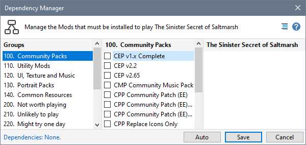
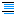
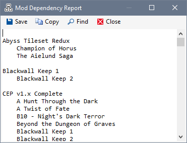

Use the Dependency Manager to define other Mods (eg CEP) required to play a specific Mod.

Each time you use Download Project to retrieve information about a Neverwinter Vault Project, Mod dependency information is automatically recorded.

|
|
Description |
|
 Display Dependency Report icon. |
Displays a report showing all the Mods on which other Mods are dependent. Each required Mod includes a list of Mods that depend on them.  |
|
Groups |
This list includes all Groups containing eligible Mods. |
|
Mod List |
This list includes all eligible Mods within the selected Group. You can tick or untick the box next to the Mod to add or remove it from the Dependency List. |
|
Dependency List |
This list shows which Mods are required by the selected Mod (Procedure, Step 1). You can remove items from this list by unticking the box next to the Mod name. |
|
Auto |
Click the Auto Mod Dependencies button to process all Mods that have a Neverwinter Vault Project page web link defined in Mod Properties. The Auto button is only shown when one or more of your Mods have a Neverwinter Vault Project page web link defined. Each Project and its associated Required Projects pages are accessed to determine Mod dependencies. Dependencies identified by Auto Mod Dependencies will replace existing dependency information. The process may take some time because of the number of web pages that can be accessed. |
|
Save |
Click the Save button to store your dependencies in the Mod database. If the selected Mod is installed, added and removed dependencies will be installed or uninstalled as required. |
|
Cancel |
Click the Cancel button to leave the Mod database in the same state it was when you opened the Dependency Manager. |
Use Download Project to define dependencies
Automate Mod dependency definition
|
|
Click the menu illustration to view information about other tools. |